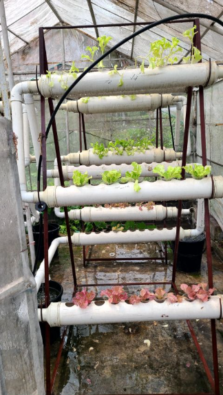
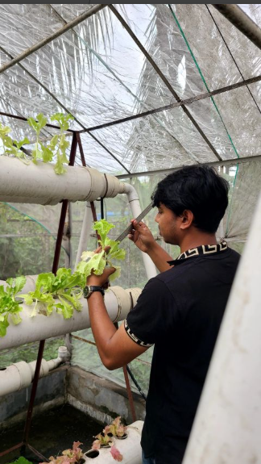
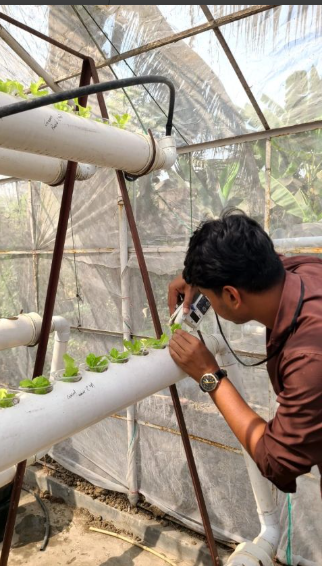

Soilless Horticulture & Agronomy
19/01/2026 - 25/03/2026
Growth and Yield Performance of Lettuce Varieties under Low Vermicompost-Based Soilless Culture
Sher-e-Bangla Agricultural University, Dhaka
Conducted an intensive experimental study on the growth and yield performance of different lettuce varieties within a vermicompost-based soilless culture system.
- Evaluated key plant growth parameters: plant height, leaf length, leaf breadth, and total number of leaves.
- Assessed yield and biomass metrics: fresh weight, dry weight, leaf, petiole, and root weight.
- Managed nutrient solution preparation, rigorous pH and EC monitoring, and data collection under protected greenhouse conditions.
- Analyzed experimental data using appropriate statistical and variance methods.


